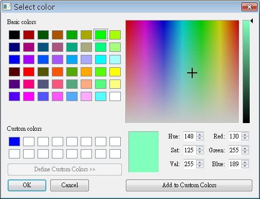
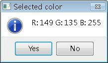
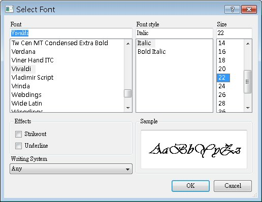
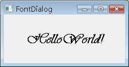

| QColorDialog類別可以顯示一個顏色選取的對話方塊，使用者選取顏色之後，會傳回一個QColor物件，可以藉由這個QColor物件來取得所選取顏色的RGB值。 下面這個程式片段是QColorDialog的簡單的示範，在選取顏色之後，使用QMessageBox來顯示選取顏色的RGB值： QColorDialog::setCustomColor(0, QRgb(0x0000FF));
QColor color = QColorDialog::getColor(QColor(0, 255, 0)); QString text; if(color.isValid()) { text.sprintf("R: %d G: %d B: %d", color.red(), color.green(), color.blue()); QMessageBox::information(0, "Selected color", text, QMessageBox::Yes | QMessageBox::No, QMessageBox::Yes); } text.sprintf("Available custom colors: %d", QColorDialog::customCount()); QMessageBox::information(0, "Get Selected Color", text, QMessageBox::Yes | QMessageBox::No, QMessageBox::Yes); setCustomColor()方法設定顏色選取方塊中，自訂色彩中出現時預設的選取顏色；getColor()這個方法除了取回設定的顏色之外，也會 將顏色選取方塊的值預設為指定的值；customCount()方法可以取回自訂色彩的最大個數，預設是16個待定義色彩。 在上例中也可以看到，QString可以使用類似C語言的printf()函式用法，也就是使用sprintf()來設定文字格式。下圖為顏色選取方塊執行的畫面：  下圖為顯示的訊息方塊，可以看到QString的文字已使用sprintf()進行格式化：  使用QFontDialog會出現一個字型選擇的對話方塊，它可以讓使用者選擇所要的字型樣式，然後傳回QFont物件，當中包括了所選擇的樣式資訊，可以直接使用這個物件來設定文字的字型。 下面這個程式可以讓使用者使用字型選擇的對話方塊，設定視窗中的QLabel物件之字型： #include <QApplication> 程式相當的簡單，QLabel物件的setFont()方法使用QFont物件來設定顯示的字型，以下是QFontDialog的執行畫面：  下圖為設定所選定字型的QLabel畫面：  |